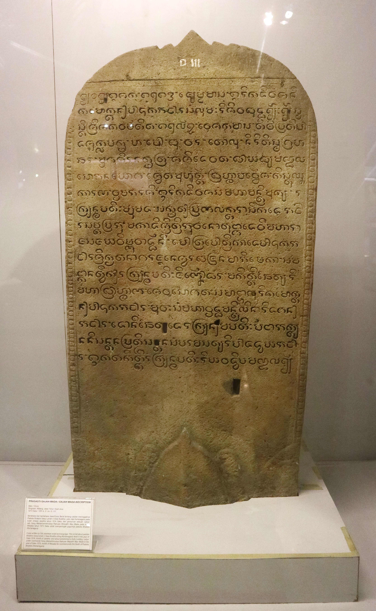
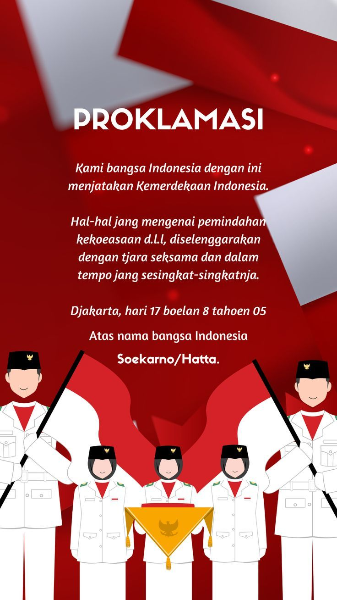
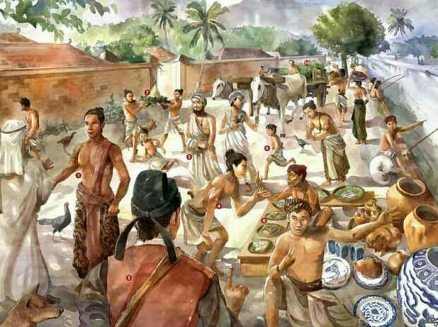

Selamat datang di Sejarah Indonesia
Ringkasan perjalanan bangsa — dari kerajaan kuno sampai kemerdekaan dan masa modern.
Sumber: ringkasan pendidikan umum
Asal-usul & Kerajaan
Latar pra-sejarah, kerajaan Hindu-Buddha, dan pengaruh maritim di Nusantara.
Zaman Kolonial
Kedatangan bangsa Eropa, VOC, dan perubahan sosial-ekonomi.
Menuju Kemerdekaan
Pergerakan nasional, proklamasi 17 Agustus 1945, dan Republik.
Garis Waktu Singkat
Abad ke-5 — 14 — Kerajaan Sriwijaya, Majapahit, dan pusat perdagangan maritim.
1602 — Didirikannya VOC, awal kolonialisme terstruktur.
1945 — Proklamasi Kemerdekaan, 17 Agustus 1945.
Periode Sejarah Utama
Ringkasan periodisasi yang mudah dipahami.
Zaman Pra-sejarah
Pembentukan budaya lokal, peninggalan arkeologi, dan migrasi Austronesia.
Kerajaan & Perdagangan
Kerajaan Hindu-Buddha, Islamisasi pesisir, dan jalur perdagangan rempah.
Kolonialisme
Dampak politik, ekonomi, serta resistensi lokal dan nasional.
Tokoh Penting
- Gajah Mada — pemersatu Nusantara (Majapahit)
- Soekarno & Hatta — Proklamator Proklamasi 1945
- Cut Nyak Dhien, Diponegoro — contoh perlawanan terhadap kolonial
Galeri & Artefak
Contoh visual — ganti gambar dengan yang asli jika punya.

Candi Borobudur

Prasasti

Foto Proklamasi

Peta Nusantara

Perahu Tradisional
Lukisan Sejarah
di atas adalah artepak sejarah indonesia jerak dulu kala